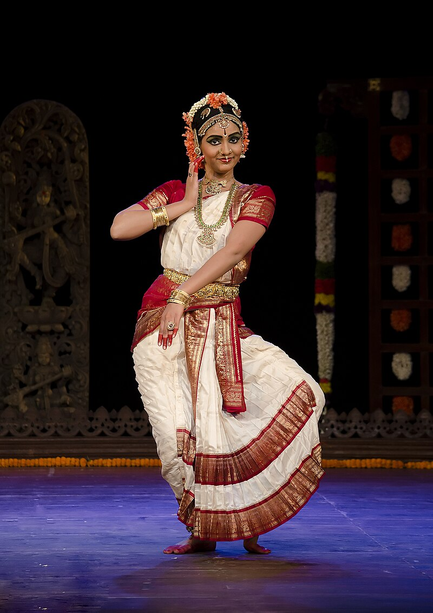
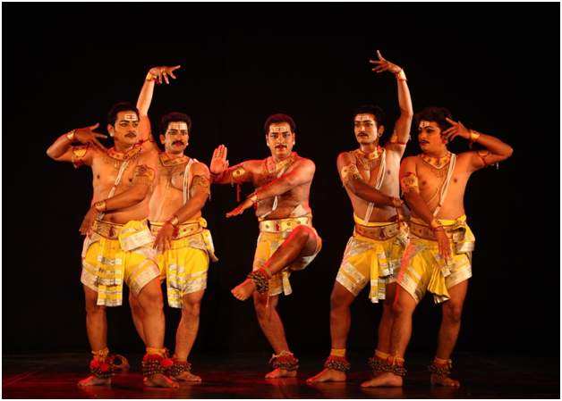
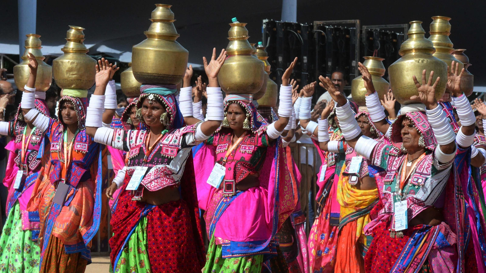

Famous Dance Forms
Andhra Pradesh is home to a variety of traditional dance forms that are a testament to its vibrant cultural history. Below are some of the most renowned dance forms from the region.

Kuchipudi:
Kuchipudi is one of the eight major Indian classical dances. Originating in the village of Kuchipudi in Andhra Pradesh, this dance-drama performance is known for its graceful movements and strong narrative storytelling.

Perini Thandavam:
This ancient dance form, also known as the 'Dance of Warriors,' was performed by soldiers before going to war. It is characterized by vigorous movements and high energy.
Burra Katha:
Burra Katha is a traditional folk dance form that involves storytelling through dance, music, and drama. It is often performed in villages during festivals and celebrations.
